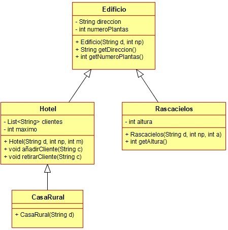

Ejercicio 5 : Consulta el diagrama de clases Edificios y programa las clases Edificio y Rascacielos.

-
Un Edificio tiene una dirección y una cantidad de plantas, que debe ser positiva.
-
El Rascacielos es un tipo de edificio del que se guarda la altura, que debe ser positiva. En caso contrario se lanzará una IllegalArgumentException.